Although the easystats packages, such as effectsize and modelbased, make it easier to assess, investigate and interpret complex models with non-linear relationships. However, transforming variables can still be useful in some instances.
In the following article, we will demonstrate and discuss some of the possible and commonly used transformations that you can consider applying to your variables. They can usually be grouped into two categories: transformations that changes only the scale, and transformation that changes also the shape.
Scale Transformations
Standardization (also known as
Z-scoring) refers to the centering and scaling of
variable so that it is expressed in terms of deviation from some
centrality index. Usually it is the mean and SD (where
0 corresponds to mean and the values represent deviations in SD from
it), but it could be other indices, such as the median and the
MAD. In R, it can be achieved via the standardize()
function in the datawizard
package.
datawizard::standardize(c(4, 5, 2, 4, 42))> [1] -0.43 -0.37 -0.55 -0.43 1.79
> (center: 11, scale = 17)Normalization rescales the variable so that the
minimum and the maximum are 0 and 1. In R, it can be achieved via the
normalize() function. However, note that it is a bit
of a misnomer, as it doesn’t actually
normalize the distribution (i.e., make “more
Gaussian”) of the data (as shown below). Instead, it makes the
range of the data within an expected range of [0, 1].
> [1] 0.050 0.075 0.000 0.050 1.000
> (original range = 2 to 42)Normalization is, in fact, a special case of
Rescaling. Any variable can be rescaled to a new range.
In R, it can be achieved via the data_rescale()
function.
> [1] -0.90 -0.85 -1.00 -0.90 1.00
> (original range = 2 to 42)Importantly, these transformations change only the scale (i.e., the “unit”); it does not impact the distribution of the variable. As such, it does not either impact the relationship that it has with other variables.
Let’s start by generating some random data and creating a convenience function to check the distribution of one of the variable and its relationship with another variable.
library(patchwork)
# Create dataset
data <- data.frame(x = bayestestR::distribution_normal(500, mean = 30, sd = 20))
data$y <- data$x^2 + rnorm(500, sd = 100)
# Write convenience function
check_transformation <- function(data, x = "x", color = "blue") {
ggplot(bayestestR::estimate_density(data[[x]]), aes(x = x, y = y)) +
geom_area(fill = color) +
ggtitle("Distribution of x") +
see::theme_modern() +
ggplot(data, aes_string(x = x, y = "y")) +
geom_point() +
geom_smooth(color = color, se = FALSE, method = "loess", formula = "y ~ x") +
ggtitle("Relationship with y") +
see::theme_modern()
}Before Transformation:
check_transformation(data, color = "blue")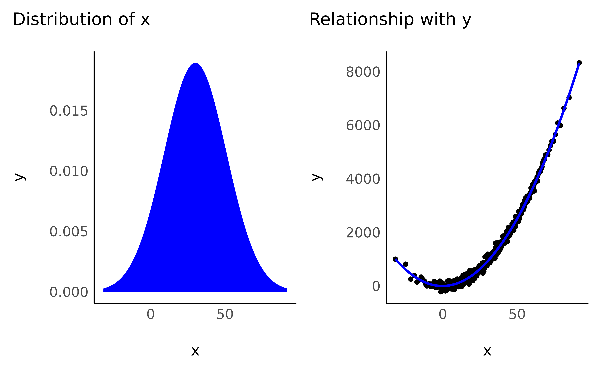
After Transformation:
data$x_standardized <- datawizard::standardize(data$x)
check_transformation(data, x = "x_standardized", color = "red") +
patchwork::plot_annotation("After Standardization")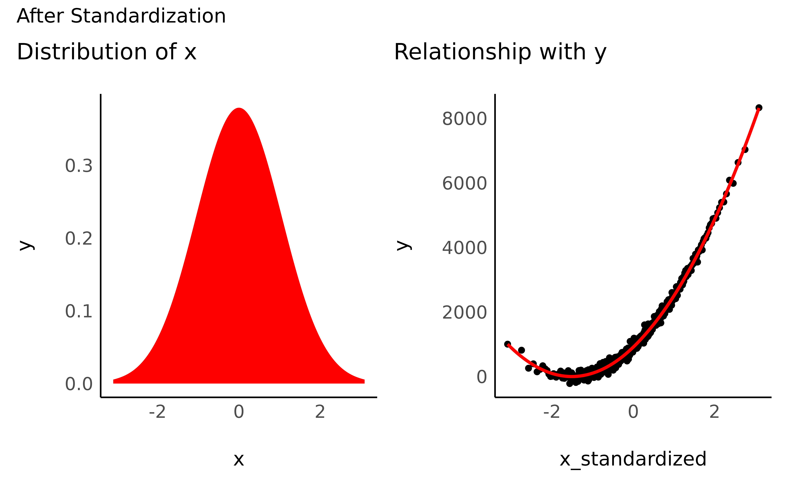
data$x_normalized <- datawizard::normalize(data$x)
check_transformation(data, x = "x_normalized", color = "orange") +
patchwork::plot_annotation("After Normalization")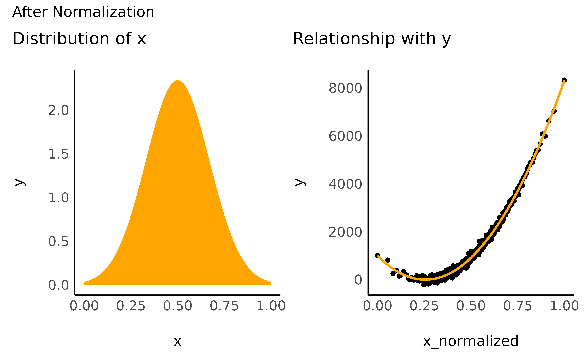
As you can see, although the unit of x has changed,
scale-transformation have no impact on the distribution of the variable
and on their relationship with other variables.
-
Pros:
- Interpretation (standardized effect sizes)
- Computation (some models can converge more more efficiently)
-
Cons:
- Interpretation (when the variable values have meaning)
- Reproducibility (values have different meaning depending on the sample’s characteristics - only for transformations that depend on properties of the variable like standardization)
Shape Transformation
http://fmwww.bc.edu/repec/bocode/t/transint.html
“I see that this is a clever trick that works nicely. But how do I know when this trick will work with some other data, or if another trick is needed, or if no transformation is needed?”
“Transformations are needed because there is no guarantee that the world works on the scales it happens to be measured on.”
“Transformations are most appropriate when they match a scientific view of how a variable behaves.”
Most of the traditional transformation work best (i.e., are more easily explainable) with positively defined data. In the case where variables also have negative values, it is fairly common practice to shift the scale towards the positive range by adding the minimum. We can do that as follows:
data$x_positive <- data$x - min(data$x)
check_transformation(data, "x_positive", color = "yellow")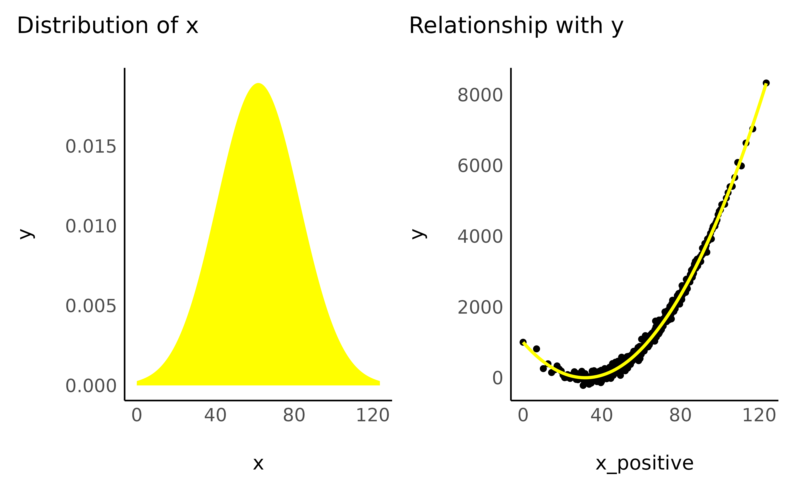
As we now know, this “scale-transformation” does not affect the variable’s distribution or the shape of the relationship. But beware, the next procedures will!
Pull the right edge “up”
The following transformations have in common that smaller values are inflated a lot, while larger values are less affected. You can imagine this as tightening the x-axis, and pushing all big values on the right towards the left, but leaving out closer values. As a result, a linear relationship will became curved and will straighten up at the right edge.
- Square root
data$x_sqrt <- sqrt(data$x_positive)
check_transformation(data, "x_sqrt", color = "cyan")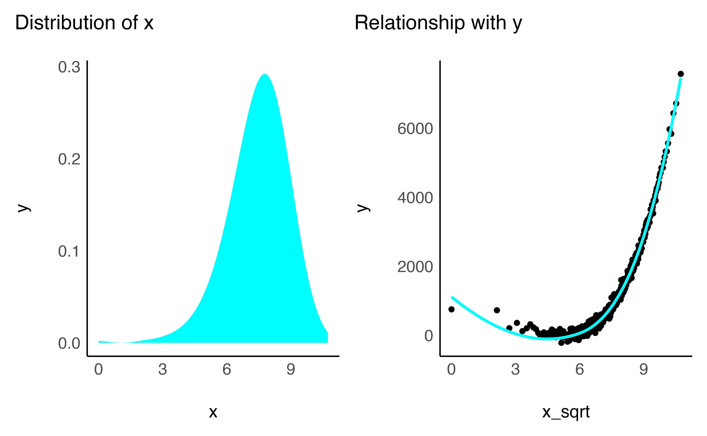
- Cubic root
data$x_cbrt <- data$x_positive^(1 / 3)
check_transformation(data, "x_cbrt", color = "purple")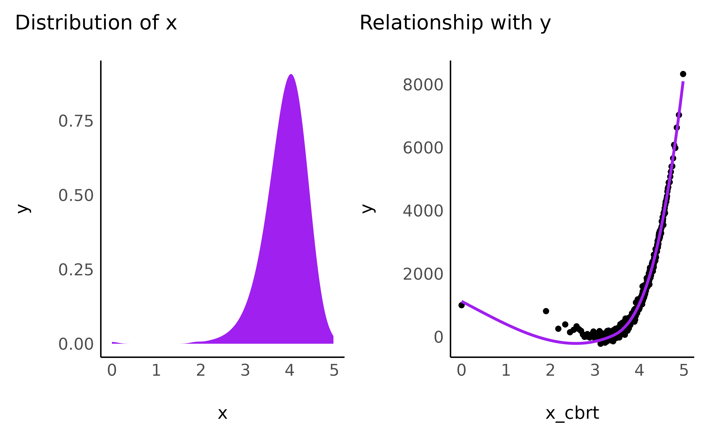
- Logarithmic
data$x_log <- log(1 + data$x_positive)
check_transformation(data, "x_log", color = "maroon")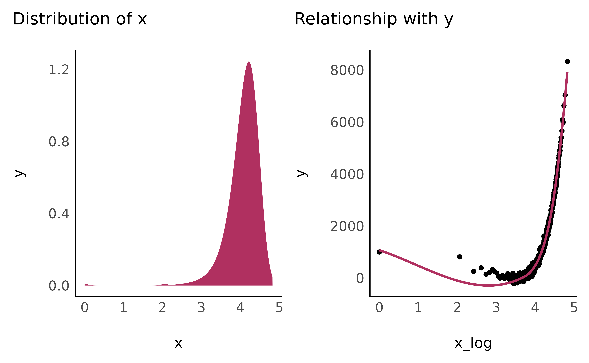
Bring the right edges “down”
The following transformations have in common that the bigger a number is, the bigger it will get. It is as if you pulled the x-axis towards the right, ever faster for the values closer to the right edge. As a result, the sharply vertical relationships will tend do smooth up as they lean towards the right.
- Exponential
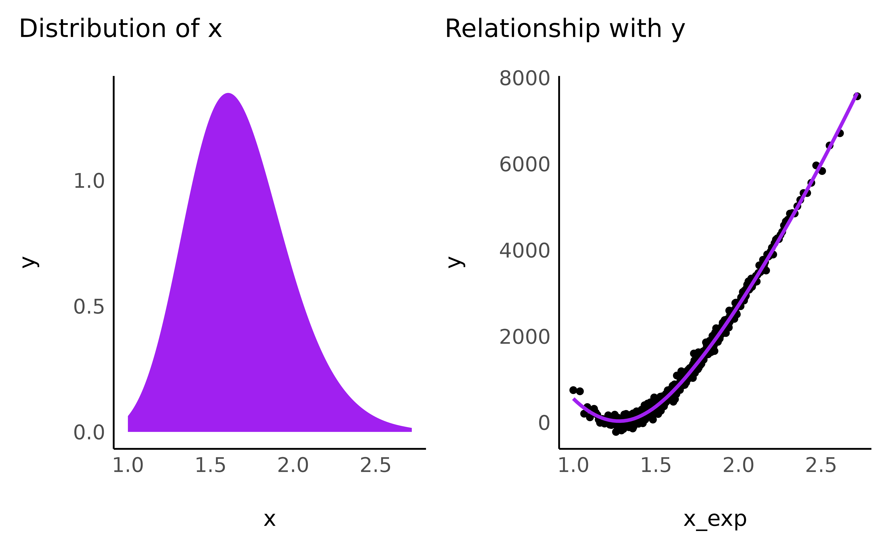
data$x_exp3 <- exp(3 * normalize(data$x_positive))
check_transformation(data, "x_exp3", color = "pink")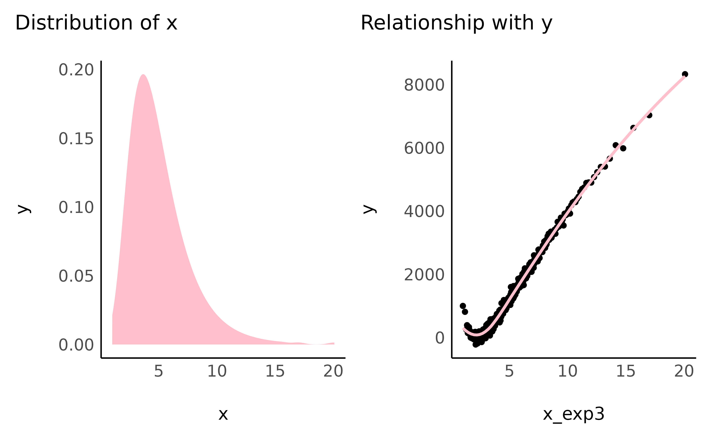
- Square
data$x_2 <- data$x_positive^2
check_transformation(data, "x_2", color = "darkblue")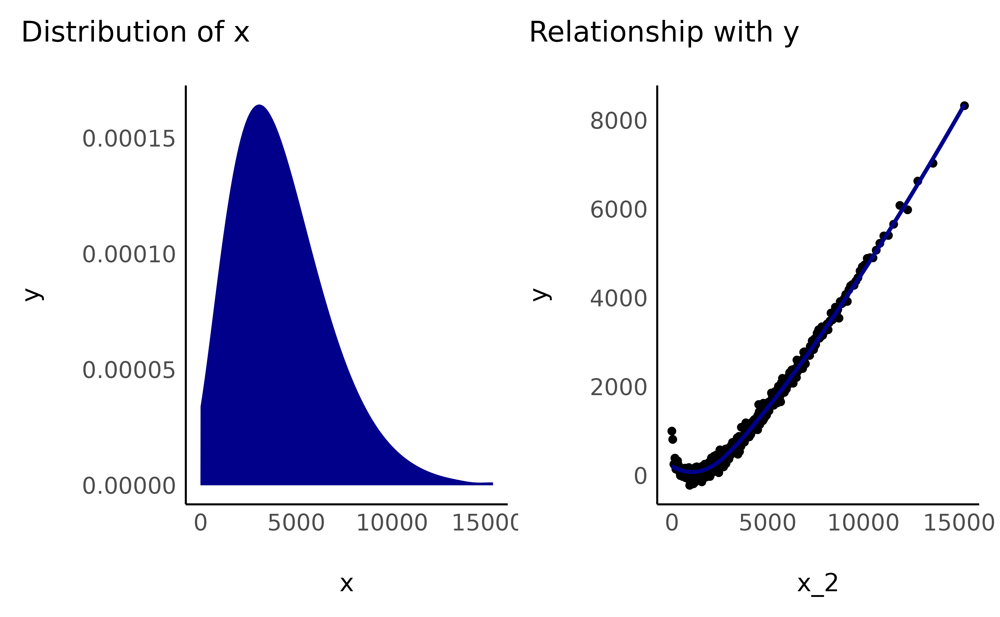
- Cubic
data$x_3 <- data$x_positive^3
check_transformation(data, "x_3", color = "darkgreen")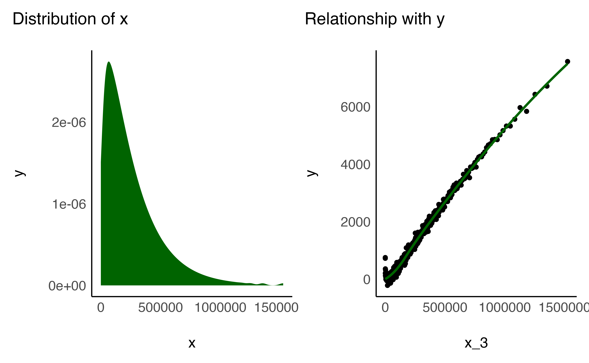
- Reciprocal
Also know as the inverse transformation.
data$x_reciprocal <- 1 / (1 + data$x_positive)
check_transformation(data, "x_reciprocal", color = "green")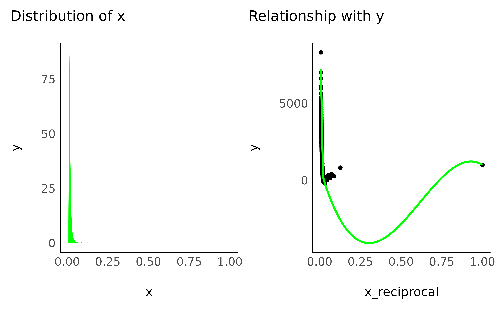
Generalization
Actually, all of the previous shape-transformations are part of two categories, the exponential/log family, and the power family. Indeed, the square root, cubic root, square and even inverse are all values to the power of something.
data$x_reciprocical == (1 + data$x_positive)^(-1)
data$x_cbrt == data$x_positive^(1 / 3)
data$x_sqrt == data$x_positive^(1 / 2)
data$x_2 == data$x_positive^(2)
data$x_2 == data$x_positive^(3)